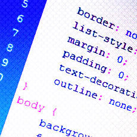

Hojas de estilo en cascada
 Qué son las hojas de estilo en cascada CSS
son las abreviaturas en inglés para Cascading Style Sheets (Hojas de Estilo en Cascada, en español). Esencialmente, es un lenguaje que rige el diseño y presentación de los sitios y páginas web, en otras palabras, cómo se ven cuando un usuario las visita. Trabaja junto al lenguaje HTML, que es el encargado del contenido básico de las páginas. CSS separa el contenido de la representación visual del sitio.
¿Qué son las Hojas de Estilo en Cascada CSS? (2021). Recuperado 5 de octubre de 2021, de Arume website: https://lovtechnology.com/que-son-las-hojas-estilo-cascada/
Maneras de implementar CSS
Existen 3 maneras Inline, Externo e Interno
El estilo Interno, los estilos se cargan cada vez que hay una actualización en el sitio web, lo que puede aumentar el tiempo de carga. También no se podrá utilizar el mismos estilo CSS en múltiples páginas, porque se encuentran en una sola página.
La manera Externo es la más conveniente, todo se hace de manera externa en un fichero .css. Esto significa que puedes hacer todo el estilizado en un archivo separado y aplicar el CSS a cualquier página que se desea. La manera externa puede mejorar los tiempos de carga.
Y por último, el estilo Inline de CSS funciona con elementos específicos que contiene la etiqueta <"style">. Cada componente tiene que usado, por lo consiguiente no es la mejor manera, ni la más rápida para manejar CSS